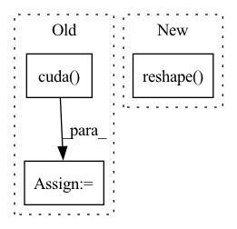

Pattern ID :2123

Before Change
c, r = torch.meshgrid(torch.arange(cols), torch.arange(rows))
c = torch.transpose(c.cuda(), 0, 1)
r = torch.transpose(r.cuda(), 0, 1)
points = torch.stack([c, r, depth])
points = points.reshape((3, -1)).T
points = points[mask.reshape(-1)] // shape = n_points, 3
// (5 - 10 ms)
After Change
c, r = torch.meshgrid(torch.arange(cols, device=device), torch.arange(rows, device=device))
c = c.T.reshape(-1) * mask
r = r.T.reshape(-1) * mask
depth = depth.reshape(-1) * mask
points = torch.stack([c, r, depth])
points = points.T
// points = points[mask]
In pattern: SUPERPATTERN
Frequency: 3
Non-data size: 3
Instances
Fragment ID: 9104066
Project Name: amrelsersy/stereo-3d-detection
Commit Name: 02583fa0a7bd1e3d1c8632688113329b81157122
Time: 2021-05-24
Author: mamoanwar97@gmail.com
File Name: Models/AnyNet/preprocessing/generate_lidar.py
M Class Name: AnonimousClass
N Class Name: AnonimousClass
M Method Name: project_disp_to_points(3)
N Method Name: project_disp_to_points(3)
M Parent Class:
N Parent Class:
M File Name: Models/AnyNet/preprocessing/generate_lidar.py
N File Name: Models/AnyNet/preprocessing/generate_lidar.py
M Start Line: 21
M End Line: 42
N Start Line: 21
N End Line: 33
'>
Before Change
// chenyun版本的代码中是有对训练阶段的roi_locs进行归一化的,然后再在非训练状态下进行逆向归一化
mean = torch.Tensor(self.loc_normalize_mean).cuda().repeat(self.n_class)[None]
std = torch.Tensor(self.loc_normalize_std).cuda().repeat(self.n_class)[None]
roi_locs = (roi_locs * std + mean) // 减均值除以方差的逆过程
roi_locs = roi_locs.view(-1, self.n_class, 4) // [300, self.n_class*4] -> [300, self.n_class, 4]
After Change
roi_locs = roi_locs.view(-1, self.n_class, 4) // [300, self.n_class*4] -> [300, self.n_class, 4]
roi = roi.view(-1, 1, 4).expand_as(roi_locs) // [300, 1, 4] -> [300, self.n_class, 4]
// pred_boxes = loc2box(at.tonumpy(roi).reshape((-1, 4)),at.tonumpy(roi_locs).reshape((-1, 4)))
pred_boxes = loc2box_torch(roi.reshape(-1, 4),roi_locs.reshape(-1, 4))
pred_boxes = at.totensor(pred_boxes) // torch.Size([5700, 4])
pred_boxes = pred_boxes.view(-1, self.n_class, 4) // (300*self.n_class, 4) -> (300, self.n_class, 4)
// 限制预测框的坐标范围
'>
Fragment ID: 9104042
Project Name: pangkun248/faster-rcnn-pytorch
Commit Name: 039ff4a5e5951cf78a03f81db4cb0094623eb8de
Time: 2021-08-26
Author: 39581901+pangkun248@users.noreply.github.com
File Name: model.py
M Class Name: FasterRCNN
N Class Name: FasterRCNN
M Method Name: predict(3)
N Method Name: predict(3)
M Parent Class: nn.Module
N Parent Class: nn.Module
M File Name: model.py
N File Name: model.py
M Start Line: 150
M End Line: 156
N Start Line: 153
N End Line: 158
'>
Before Change
update_list_avg = [tb_exp_averager.forward("Loss_average", _) for _ in update_list]
// Computing gradients for fnet and updating weights
fnet_loss = FLAGS.warp_scaling * warp_loss + fnet_loss.detach()
fnet_loss = fnet_loss.cuda()
fnet_optimizer.zero_grad()
fnet_loss.backward()
fnet_optimizer.step()
update_list_avg += [tb, dt_ratio]
After Change
FLAGS.crop_size))
s_input_warp = F.grid_sample(torch.reshape(Frame_t_pre, (
FLAGS.batch_size * (inputimages - 1), output_channel, FLAGS.crop_size, FLAGS.crop_size)),
torch.reshape(Frame_t[:, :, 0:2], (FLAGS.batch_size * (inputimages - 1), 32, 32, 2)))
input0 = torch.cat(
(r_inputs[:, 0, :, :, :], torch.zeros(size=(FLAGS.batch_size, 3 * 4 * 4, FLAGS.crop_size, FLAGS.crop_size),
'>
Fragment ID: 9104038
Project Name: dwightfoster/pytorch-tecogan
Commit Name: b64afd58ac37b8b9ed21dc91b415612572cfa585
Time: 2021-03-11
Author: dwightfoster03@gmail.com
File Name: code/train.py
M Class Name: AnonimousClass
N Class Name: AnonimousClass
M Method Name: TecoGAN(11)
N Method Name: TecoGAN(13)
M Parent Class:
N Parent Class:
M File Name: code/train.py
N File Name: code/train.py
M Start Line: 47
M End Line: 347
N Start Line: 66
N End Line: 145